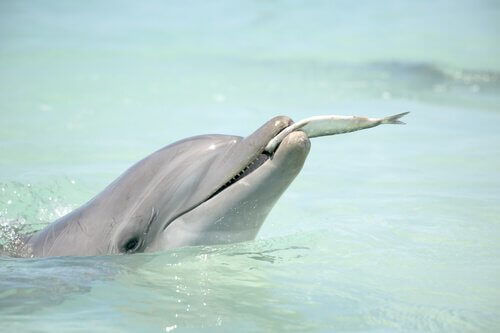
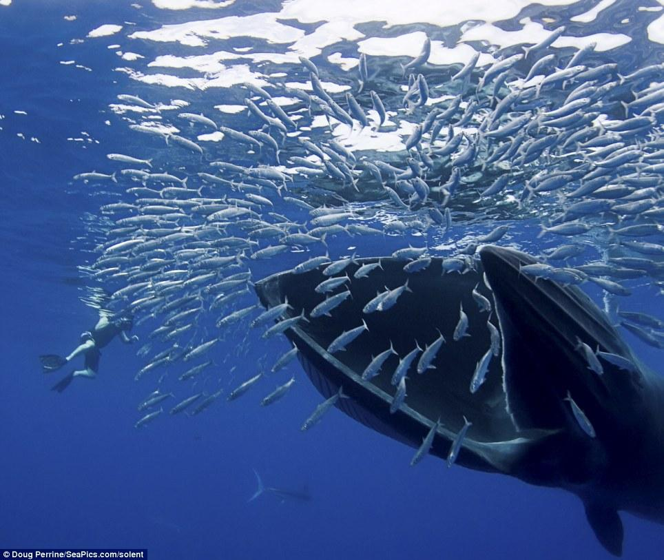

Os golfinhos são carnívoros, o que significa que se alimentam de outros pequenos animais,
como peixes, moluscos e crustáceos.
Já as baleis, se alimentam de diversos animais, como peixes,
lulas, aves, focas, camarões, golfinhos e tartarugas-marinhas.
 